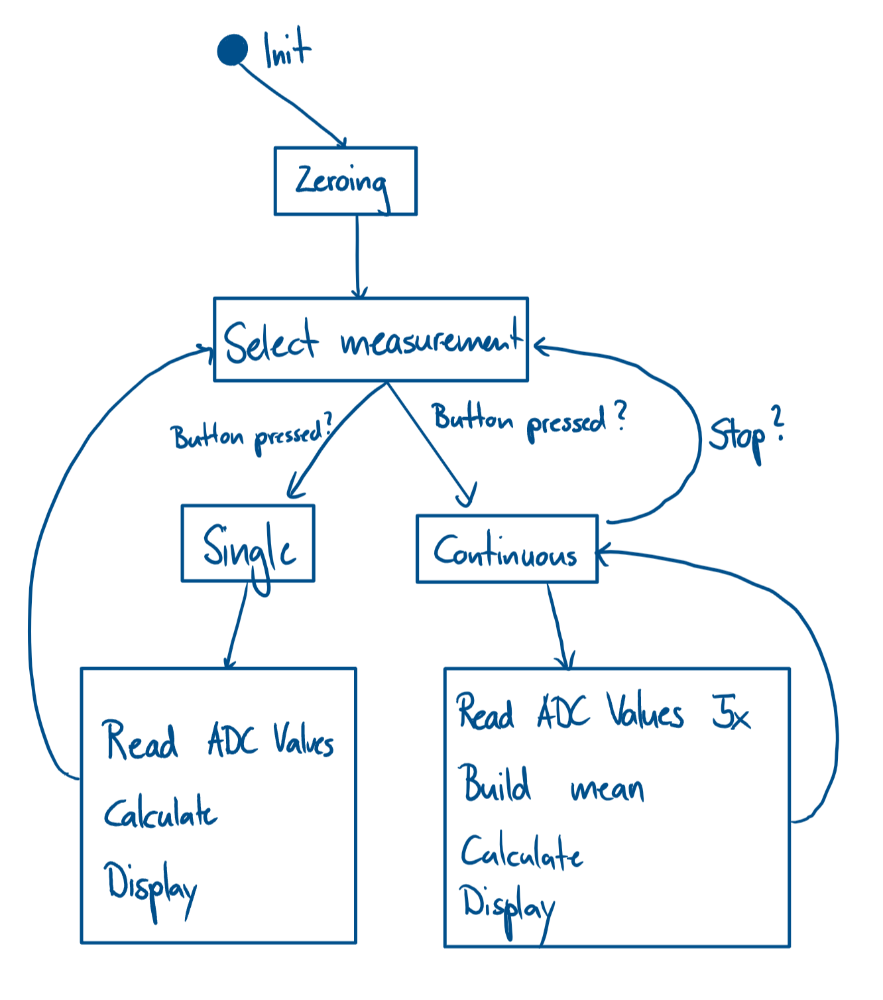

|
Cable Monitor
ZHAW ET.PM3
|
|
Cable Monitor
ZHAW ET.PM3
|
This doxygen contains the documentation of the Cable Monitor software, which is part of the Electronics-Project Modules in the second year of the electronics engineering curriculum at the School of Engineering of the Zurich University of Applied Sciences.
It gives an overview over the code running on the STM32 discovery board. An example code was given but not used. Some functions regarding the touch display were adapted from it.
The discovery board contains the microcontroller that measures the analog values sent from the sensor board and the display for the visual user output.
The rough code flow is shown here:

After initializing, the zero levels of the pads/coils are measured and stored. The cable monitor either measures a single period or multiple periods in sequence (continuous). The type of measurement is selectable on the touch display.
First, all values from the ADCs are read. After subtracting the zero levels, the calculations (distance, direction, current) can be done.
After calculating, the results are shown on the display. The continuous mode measures 5 periods and averages them to get a more accurate measurement.
The code is written for the evaluation board STM32F429IDISCOVERY (Discovery kit with STM32F429ZI MCU) placed on the baseboard with a mounted sensor board: